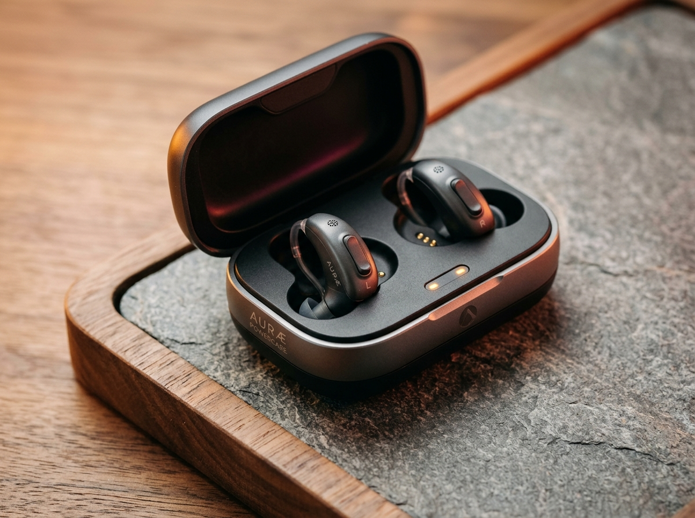
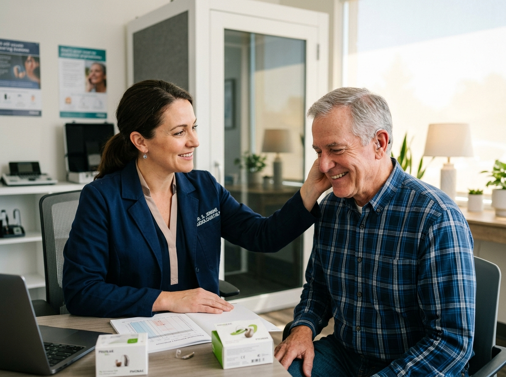
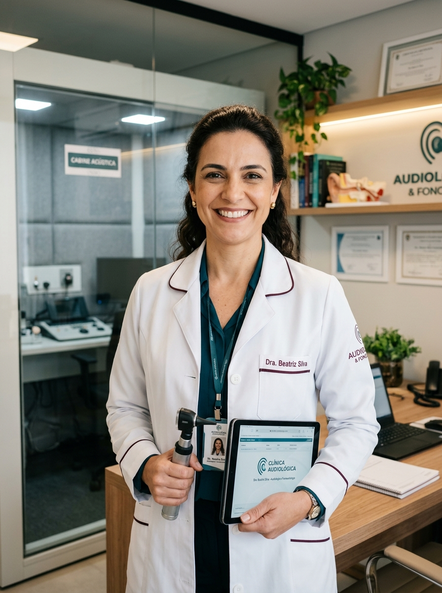

Tecnologia de Ponta
Modelos quase invisíveis, conectividade Bluetooth direta com smartphone e TV, estojo de recarga sem fio e inteligência artificial para clareza em ambientes ruidosos.
Excelência clínica e um protocolo de reabilitação que vai muito além da venda: cuidamos de perto da sua adaptação, com tecnologia avançada e acompanhamento contínuo para você ouvir com conforto e viver com plenitude.
Aliamos a mais avançada tecnologia mundial em audiologia a um acompanhamento próximo e dedicado para cada paciente.

Modelos quase invisíveis, conectividade Bluetooth direta com smartphone e TV, estojo de recarga sem fio e inteligência artificial para clareza em ambientes ruidosos.

Cada paciente é acolhido com escuta ativa, respeito ao seu tempo e orientação contínua à família durante todas as etapas do processo de adaptação.

Diagnósticos precisos em cabine acústica, protocolos internacionais de audiologia clínica e verificação eletroacústica com sonda microfônica.
Moldes anatômicos em 3D que se ajustam à morfologia do seu ouvido, garantindo discrição impecável, leveza e uso agradável o dia todo.
Um protocolo completo que acompanha você antes, durante e depois da sua adaptação com carinho, paciência e rigor técnico.
Você nos envia uma mensagem no WhatsApp, tira suas primeiras dúvidas sobre audição com nossa equipe e agenda o melhor horário para sua avaliação gratuita.
Realizamos testes audiométricos sem dor e sem desconforto em cabine acústica calibrada, mapeando exatamente quais frequências sonoras necessitam de estímulo.
Explicamos o audiograma de forma simples e transparente, ouvindo suas queixas do dia a dia (conversas em família, TV, trabalho) para planejar a solução exata.
Apresentamos os modelos mais indicados: invisíveis, recarregáveis ou com inteligência artificial, de fabricantes mundiais de excelência, para você testar e aprovar.
Realizamos retornos periódicos com ajustes finos e treino auditivo enquanto seu cérebro se acostuma novamente aos estímulos sonoros, com total conforto.
Nosso compromisso não acaba na entrega do aparelho: você conta com revisões preventivas, higienização profissional, suporte técnico e novas regulagens sempre que precisar.
Sem qualquer compromisso de compra. Venha conhecer nosso espaço e entender de verdade a sua audição.
Agendar pelo WhatsApp OficialNa OTUS Soluções Auditivas, acreditamos que ouvir bem é a chave para se conectar com quem você ama e desfrutar a vida plenamente. Não entregamos apenas aparelhos: entregamos um plano completo de reabilitação auditiva humana e personalizada.
Com mais de 10 anos de experiência clínica, nossa atuação é focada em adaptações anatômicas de alta tecnologia, escuta paciente e respeito absoluto ao ritmo individual de cada pessoa.
A verdadeira recompensa do nosso trabalho é presenciar sorrisos de quem voltou a participar ativamente dos almoços em família e a ouvir o canto dos pássaros.
Dicas de saúde auditiva, cuidados diários com seus aparelhos, orientações para a família e histórias inspiradoras de quem voltou a ouvir com nitidez.
🦻🏻 Te ajudo a ouvir melhor | CRFa 4-11711
✨ Aparelhos Auditivos e cuidado personalizado
📍 +10 anos de experiência em Reabilitação Auditiva
🏢 Empresarial Albert Einstein - Recife / PE
Trabalhamos com os maiores líderes da engenharia acústica médica para oferecer som cristalino, durabilidade e confiabilidade.
Reunimos as principais perguntas que recebemos de pacientes e familiares. Tem alguma dúvida específica? Fale conosco diretamente.
Nossa equipe fonoaudiológica está à disposição para tirar dúvidas pelo WhatsApp.
Enviar Dúvida no WhatsAppLocalizado no mais tradicional polo médico do Nordeste, em um edifício empresarial moderno com total acessibilidade, conforto e segurança.